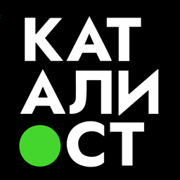
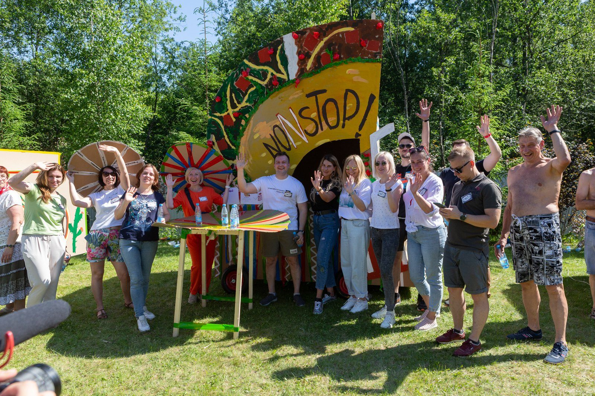
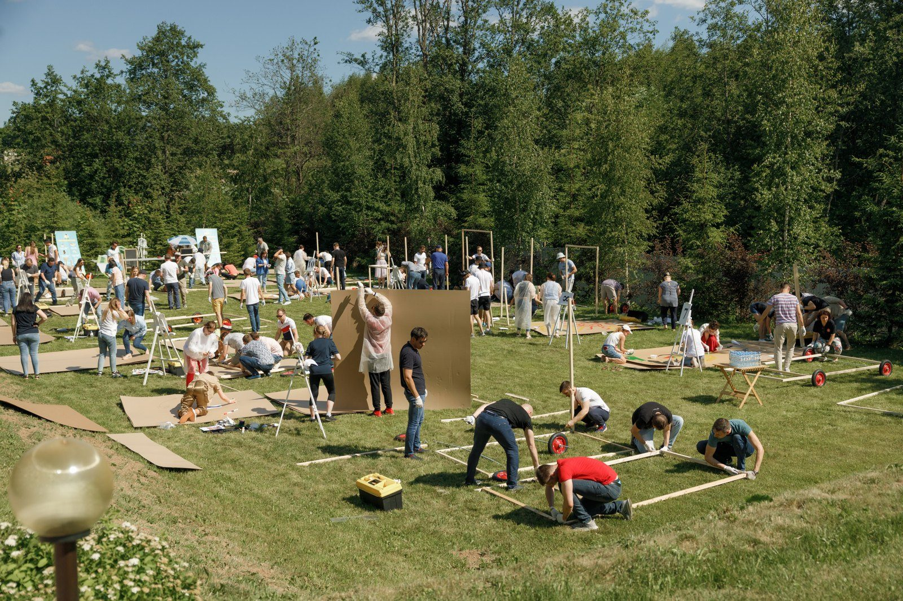
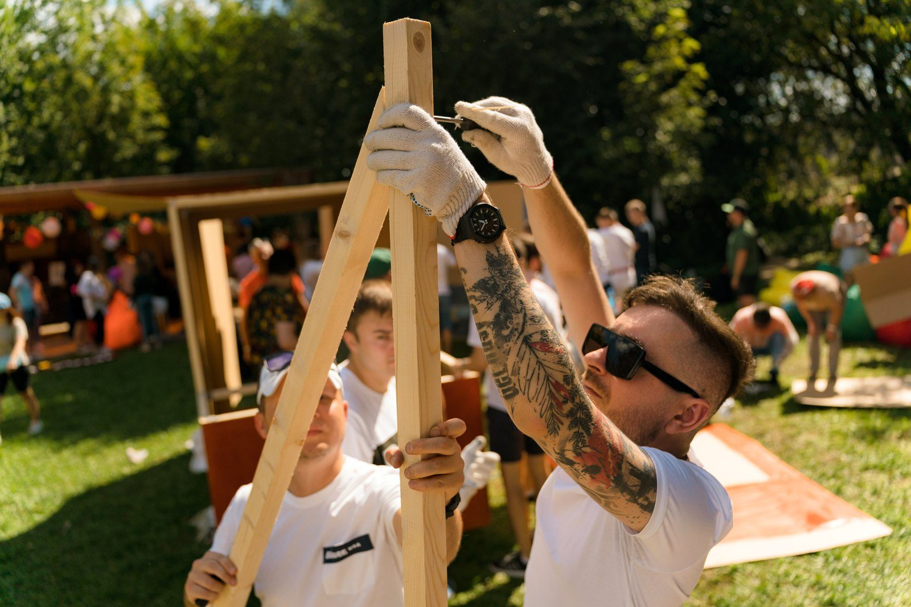
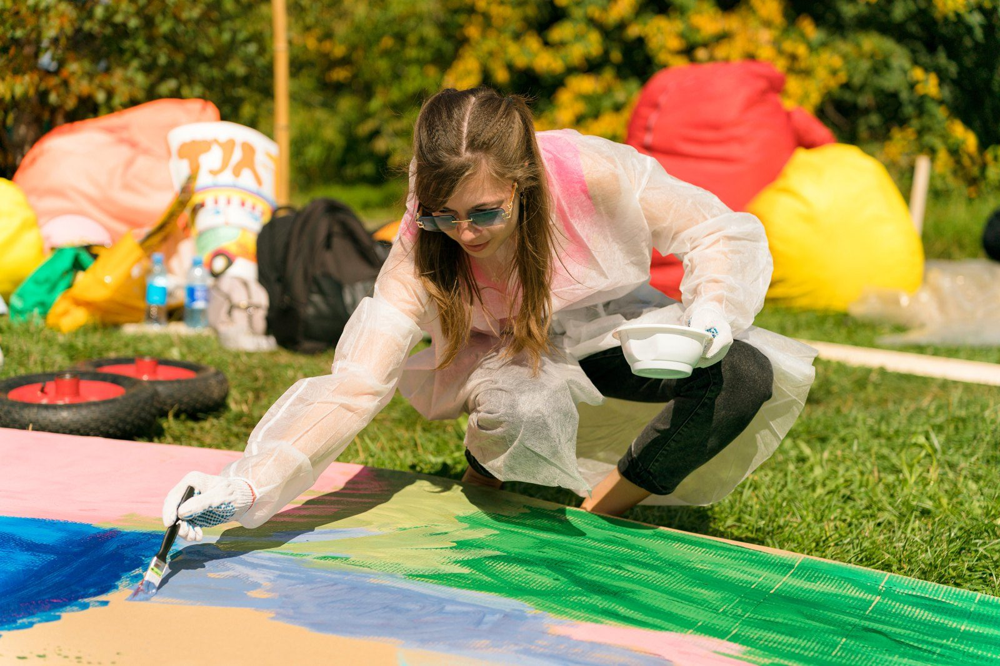
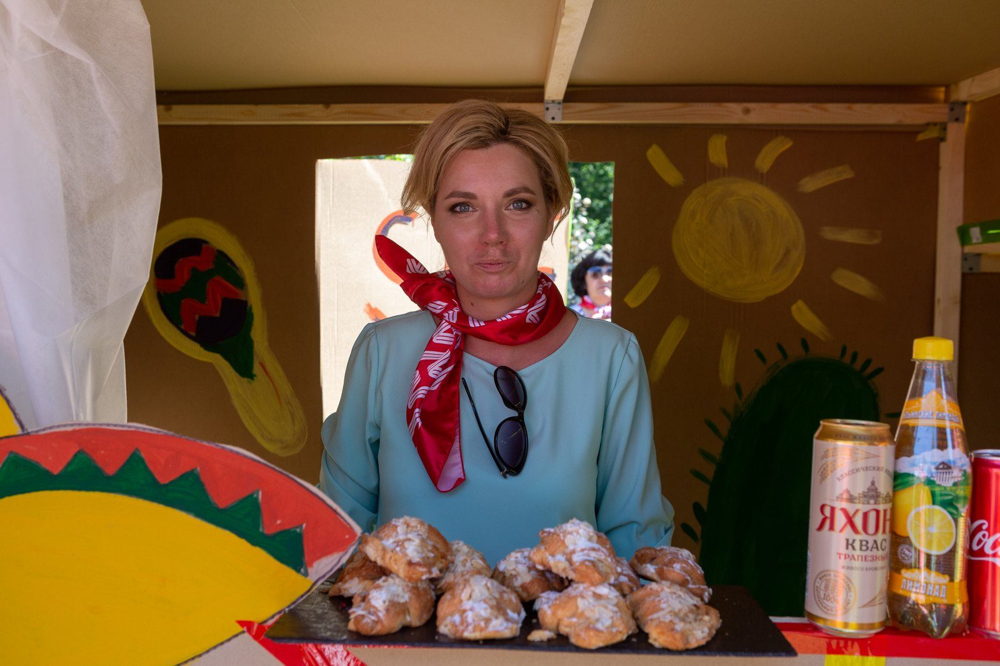
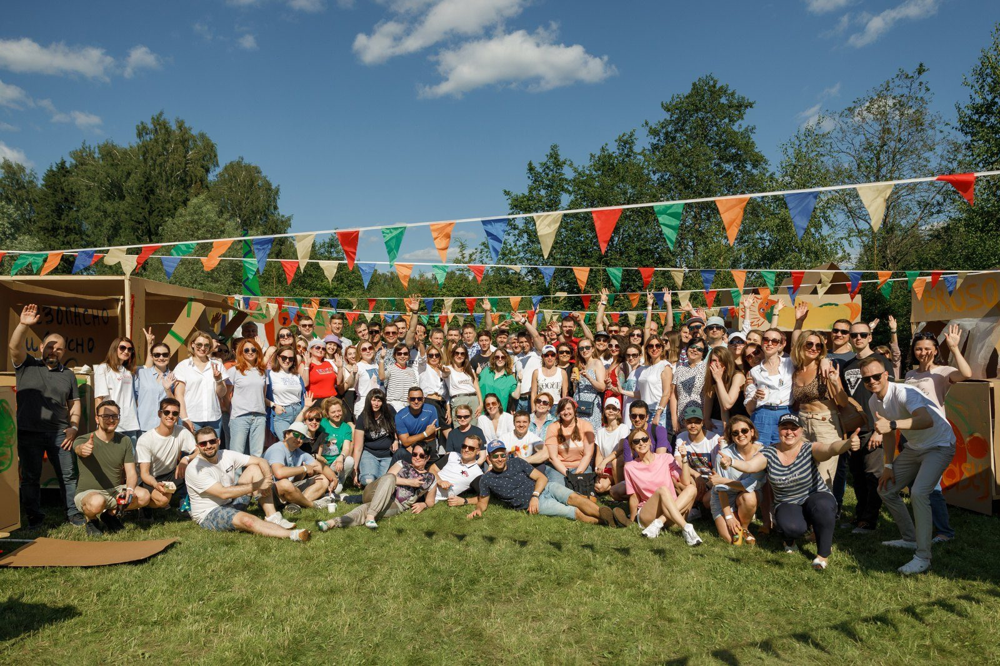
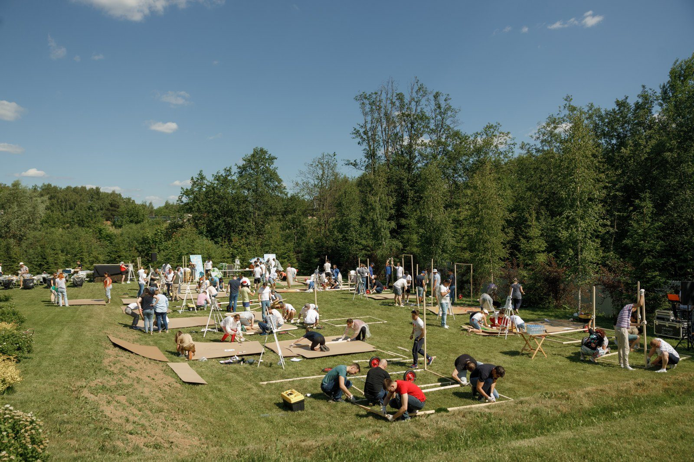
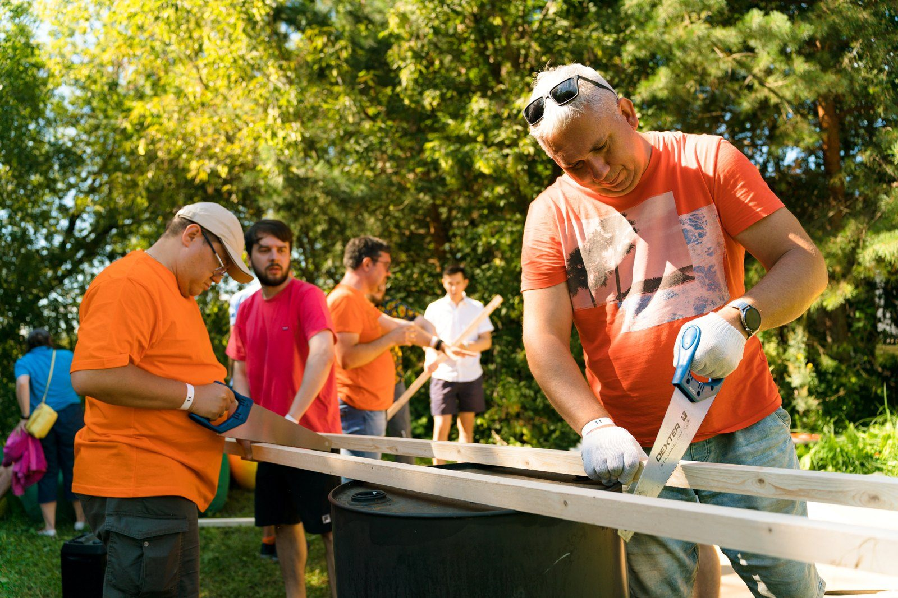
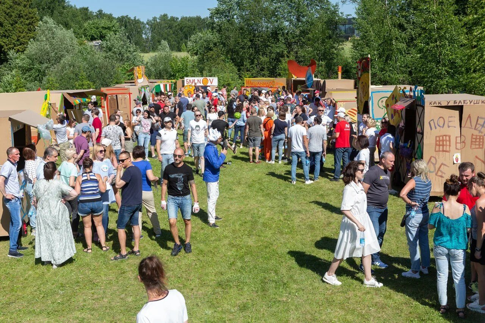

Лужайка на Крылатских Холмах, над головой флажки. Двадцать команд пилят доски, собирают деревянные каркасы и красят картон. Скоро здесь встанет целая улица фургонов с едой: греческая кухня, мексиканская, американская.
А потом в этих фургонах начнут торговать. По-настоящему: с ценами, рекламой и конкуренцией за покупателя.
Это Фестиваль Фудтраков, командная бизнес-игра Каталиста. Впервые мы провели её для финансовой дирекции Райффайзенбанка: 350 сотрудников, 20 команд по 17-18 человек. Рассказываем, откуда взялась идея, как устроена игра и за что её отметили три профессиональные премии.
Райффайзенбанк заказывал у нас тимбилдинги несколько лет и успел попробовать почти все программы агентства. Для ежегодного летнего выезда на открытую площадку в Москве банку нужно было что-то, чего ещё не было на рынке.
Сотрудников опросили, и пожелания разошлись:
Сверху бюджет: до 800 000 ₽ на 350 человек.
Если провести четыре формата по очереди, день растянется на 5-8 часов и не уложится в смету. А удержать внимание людей так долго сложно.


Решение нашёл Ирек Мансуров, сооснователь и исполнительный директор Каталиста. Фестивали фудтраков постоянно проходят в Америке и Европе. Ирек перенёс эту идею в тимбилдинг, потому что в одном фудтраке сходятся все четыре пожелания:
Как программа выглядит вживую, Ирек показывает в обзоре на полторы минуты.

Стройка. Команда получает реквизит и инструменты и собирает свой фургон. За построенный фудтрак она получает первый капитал в игровой валюте. Личные деньги участникам не нужны.
Дизайн. Фургон красят, придумывают ему название и вывеску. За яркое оформление по итогам голосования положена отдельная премия.
Кухня. Каждый фургон работает с одной из 20 кухонь мира. Рецепты подобраны так, что справится новичок: сэндвичи, бургеры, хот-доги, лимонады.
Команда получает технологические карты, фото блюд и продукты без скоропортящихся позиций. Рядом работает кулинарный консультант. Открытого огня нет: готовят на гриле и электрических конфорках.
Продажи. Команду делят на две смены. Пока одна готовит и торгует, другая гуляет по фестивалю и тратит деньги у соседей. Потом смены меняются.
Деньги игровые, а рыночные отношения настоящие. Продукты, реклама и услуги коллег стоят денег, и каждая команда решает, на что их потратить.
Финал. Победителя определяют по прибыли каждой команды. У кого в итоге больше денег, тот и выиграл.
Весь путь от пустой лужайки до торговли занимает несколько часов. В ролике ниже больше 120 участников строят фудтраки и выходят на продажи.

Самое интересное начинается, когда люди разбираются в правилах и ищут свои ходы. На фестивале банка:
Победила команда «Шалом» с фалафелем.
Для HR здесь главное: каждый находит своё дело. Кто-то строит, кто-то рисует, кто-то считает цены и стратегию. И вся команда видит, как общий результат складывается из работы разных людей.



Кейс мы отправили в премию «Событие года», в номинацию «Тимбилдинг года». Там было 10 номинантов. Фестиваль Фудтраков для Райффайзенбанка победил на VI церемонии.
Потом проект вошёл в шорт-лист премии «Золотой пазл». Там его нужно было защищать очно перед жюри, и он снова победил. Третью награду программа получила в премии «Ивент прорыв».
Всего у Каталиста 16 наград ивент-индустрии. Среди них BEMA 2025: её получила другая наша программа, деловая игра «Стартап» с нейросетями.

Небольшая хитрость для бюджета: еды на фестивале столько, что фуршет или обед можно убрать из общей сметы. А вечером в тех же декорациях можно провести развлекательную программу.
Каталист проводит тимбилдинги с 2010 года: 4 800 проектов, 16 наград, 50+ авторских программ.
Фото, видео и подробности программы собрали на сайте: Фестиваль Фудтраков на catalystrussia.ru. Напишите, сколько вас и где хотите провести день, и мы предложим вариант под вашу команду.
тимбилдингбизнес-игракейсHRкорпоратив